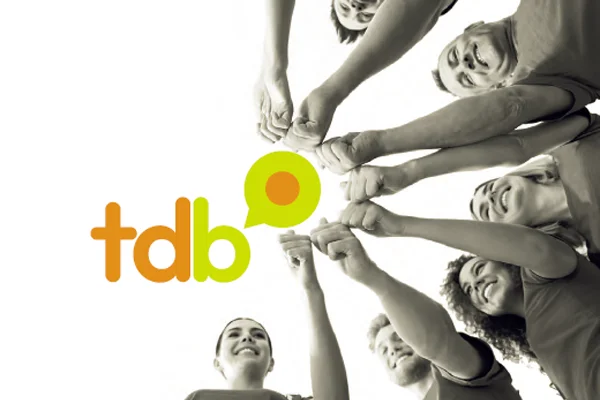
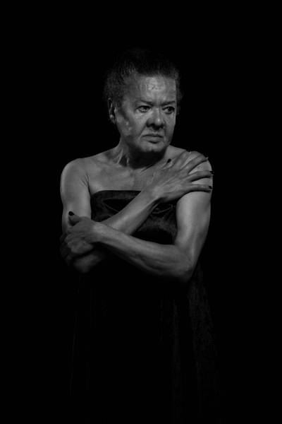

Transformando sorrisos, mudando vidas.
Aqueles que transformamos com nosso trabalho
Crianças de 11 a 17 anos
Mulheres trans e cis
Nossas linhas de atuação
Dentista do Bem
O Dentista do Bem é o principal programa da Turma do Bem. Ele nasceu para cuidar de crianças e adolescentes entre 11 e 17 anos que vivem em situação de vulnerabilidade social. Nossos beneficiários enfrentam graves problemas bucais e, muitas vezes, não têm condições de pagar por um tratamento. Ao serem selecionados, esses jovens passam a receber atendimento odontológico gratuito, com todo o cuidado e carinho que merecem — até completarem 18 anos. Cada sorriso recuperado é um passo a mais para mudar histórias e transformar vidas.
Apolônias do Bem
O Apolônias do Bem oferece tratamento odontológico gratuito para mulheres cis e trans que tiveram seus sorrisos afetados por situações de violência. Nosso propósito é devolver saúde, autoestima e dignidade a quem carrega no corpo e na alma marcas de dor e superação. As participantes passam por uma triagem acolhedora e não invasiva, com um rápido exame bucal e uma avaliação que mede o impacto da saúde bucal na qualidade de vida. Cada atendimento é um gesto de recomeço, coragem e empoderamento
Turma do Bem - Estátisticas
+82 mil jovens atendidos
+1.1 mil mulheres atendidas
+18 mil dentistas voluntários